Post Training - I
Large Language Models : A Hands-on Approach
Overview
- Post-training map
- Behaviour vs Knowledge
- CPT
- SFT
LLM Architectures
- Decoder only LLMs : Dense, MoEs, Hybrid Models

LLM Training Pipeline
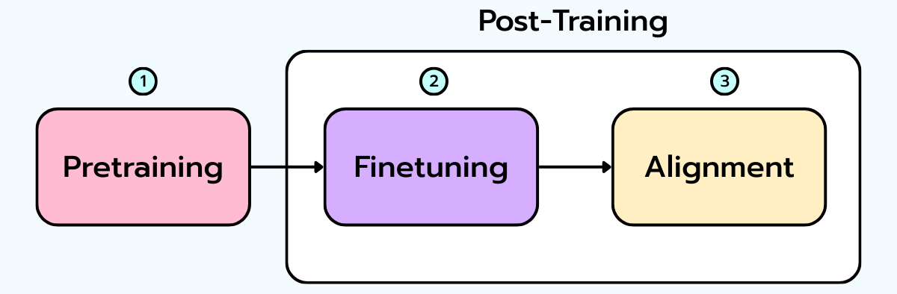
- Pretraining on large internet scale, raw text data
- Supervised Fine-Tuning (SFT) on high-quality demonstrations
- Alignment via Reinforcement Learning
Training LLMs : Pretraining
- Model learns to predict the next token on a large corpus of text
- The model learns grammar, facts, reasoning abilities, code, mathematics etc. and world knowledge from this data
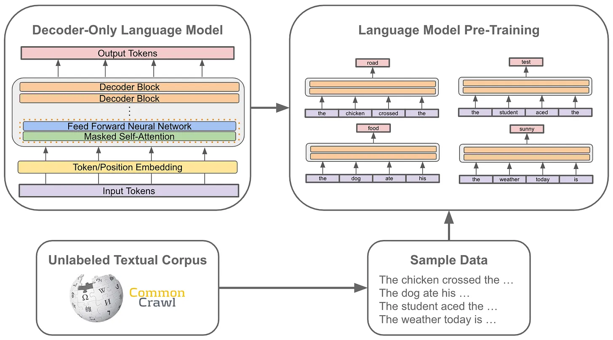
- model gets extremely good at predicting the next token, but it doesn’t know how to follow instructions or align with human preferences
Sampling from a Pre-trained LLM
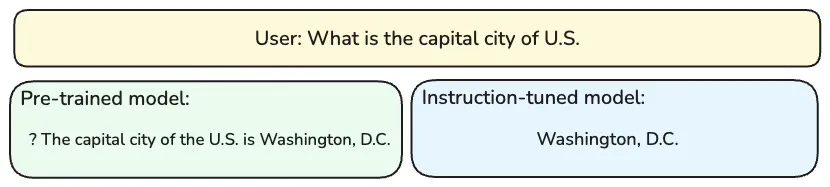
- How to get from a base model to a assistant that answers questions, writes code, or summarizes documents?
Post-training
- Pre-training - done by maybe a dozen labs
- Post-training is what the rest of us do
- A base model has knowledge and but not behaviour
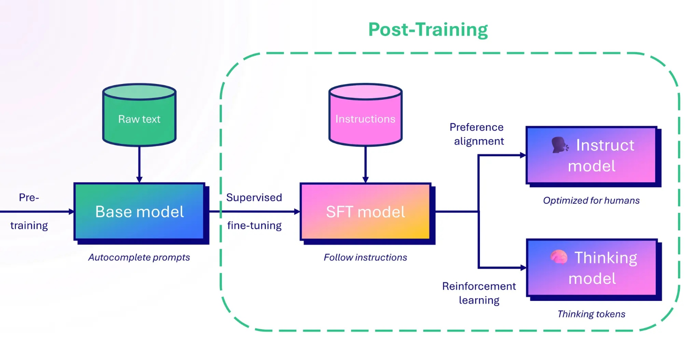
Pre-training vs Post-training
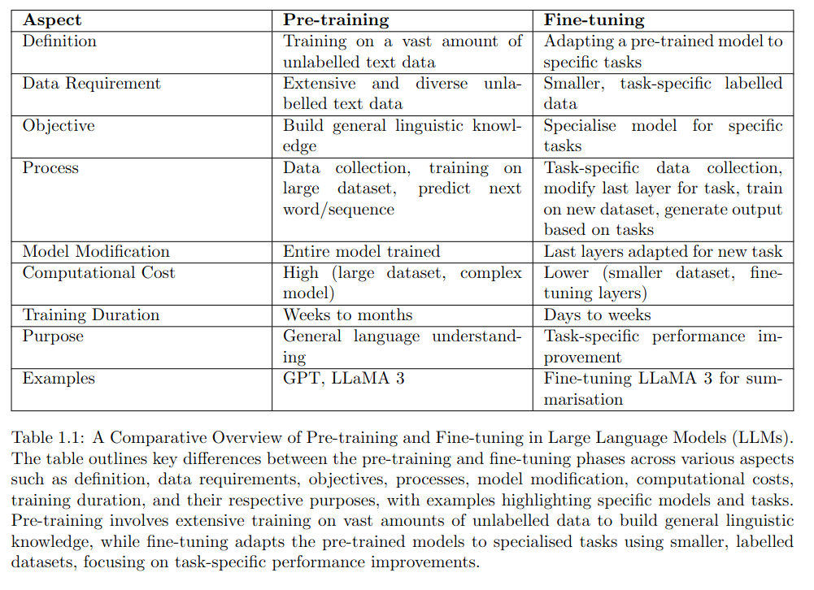
The Signal Ladder
| Stage | Method | Signal it consumes | What it changes |
|---|---|---|---|
| 0 | Prompting / few-shot / RAG / tools | a few examples in context | nothing in the weights |
| 1 | Continued pre-training (CPT) | raw domain corpus (unlabeled) | knowledge |
| 2 | SFT / instruction tuning | demonstrations (input→output) | behavior, format |
| 3 | Preference alignment (DPO/RLHF) | preferences (A better than B) | taste, style, safety |
| 4 | RL with verifiable rewards | a checker (right/wrong) | capability via search |
- Each post-training method consumes a different kind of supervision signal
- The more expensive the signal, the better the behaviour (generally)
- Higher stages - more expensive to collect data and train, but more powerful results
- Start at the Prompting and work your way up until you find a method that meets your needs and budget
Behaviour vs Knowledge
Fine-tuning changes behavior, not knowledge
Example Scenario : You have a base model that is good at math, but you want it to be better at following instructions.
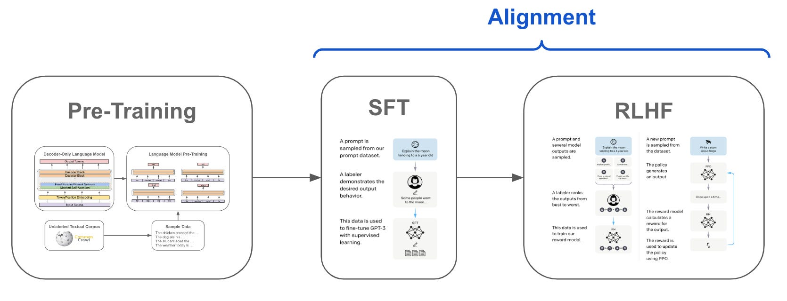
Behaviour vs Knowledge
Example: Customer Support Bot
- SFT of a model on 2,000 customer-support conversations => teaches format and tone, NOT facts about the product
- You’re eliciting knowledge it already had from pre-training.
- If no knowledge in the weights, SFT will teach the model to confidently make it up in the right format.
From LIMA paper (Zhou et al., 2023) :
“A model’s knowledge and capabilities are learned almost entirely during pre-training, while alignment teaches it which subdistribution of formats to use when interacting with users.”
Behaviour vs Knowledge
- Need new facts/jargon/language? -> Stage 1 (CPT) or don’t train at all (RAG).
- Need new format/behavior/task? -> Stage 2 (SFT).
- Trying to SFT in knowledge => may lead to hallucinating model
Should we Finetune?
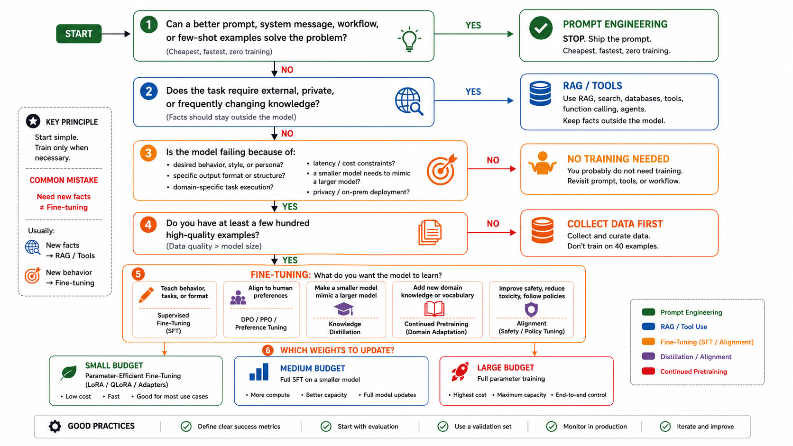
Should we Finetune?
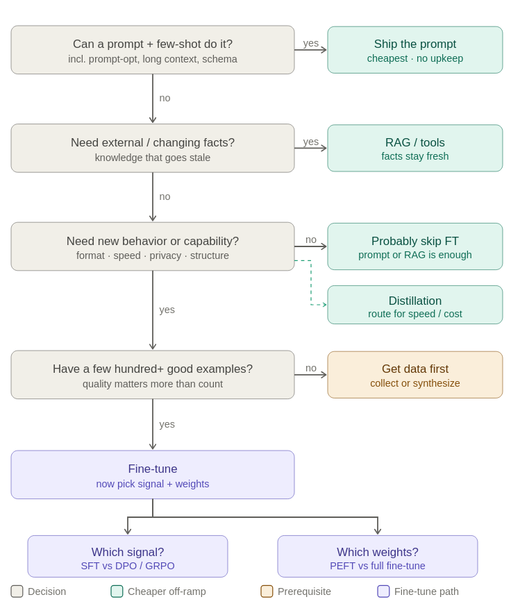
Should we Finetune?
Signal Availablity
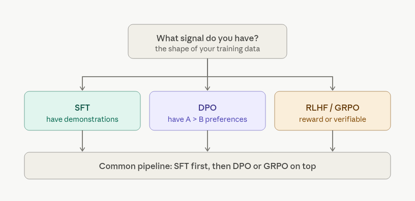
Compute Availablity
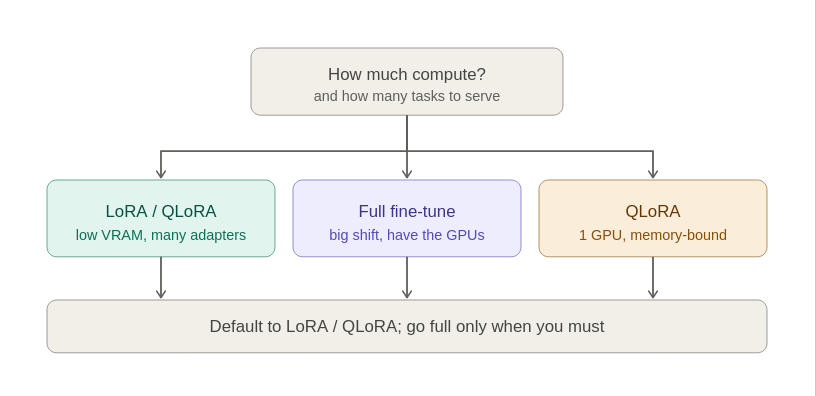
When to Finetune?
| Use case | Analysis | Rung |
|---|---|---|
| Reliable structured output (valid JSON/DSL at scale) | prompting / ICL get till 95%; fine-tuning gets 99.9% and shorter prompts | SFT |
| Style / domain tone | hard to specify in a prompt; easy to show | SFT |
| New domain knowledge (proprietary code, low-resource language) | absent from pre-training | CPT |
| Cost/latency: small model, big-model behavior | distill a frontier model’s outputs into a 3B | SFT (+ distillation) |
| Privacy / on-prem | can’t use an API; need a capable local model | CPT + SFT |
| Reasoning format | the behavior isn’t in the instruct model | SFT + RL |
When not to Finetune?
- The knowledge changes (prices, inventory, news)[RAG]
- Data : a few hundred clean examples [need to collect data first.]
- Eval has not measured the current model yet [need a baseline]
Examples
| Failure | Data Signal | Cheapest intervention | Eval / regression gate |
|---|---|---|---|
| Legal assistant gives answers in the wrong style | 300 approved answer examples | LoRA SFT on style exemplars; facts remain in RAG | Style rubric improves; citation accuracy and refusal behavior do not regress |
| Code assistant does not know internal code | raw docs + changing codebase | RAG first; CPT only if corpus is large and stable | answer accuracy, general coding regression |
| Small model cannot emit valid support-ticket JSON | 5k input/output examples | SFT/LoRA | JSON validity, latency, general chat regression |
| Math tutor fails multi-step algebra | verifier for final answers | SFT if format is missing; RLVR later if verifier is reliable | pass@1/pass@k, reasoning-format compliance, non-math regression |
Domain Adaptation
The Signal Ladder
| Stage | Method | Signal | Changes |
|---|---|---|---|
| 0 | prompt / few-shot / RAG / tools | examples in context | nothing in weights |
| 1 | Continued pre-training (CPT) | raw domain corpus | knowledge |
| 2 | SFT / instruction tuning | demonstrations | behavior, format |
| 3 | preference (DPO/RLHF) | preferences | taste, style, safety |
| 4 | RLVR | a checker | capability via search |
Domain Adaptation
Fine-tuning changes behavior, not knowledge (with one exception (CPT/DAPT))
- CPT is the only post-training method that genuinely writes new facts into the weights
CPT Scope
- Get knowledge into the model (raw corpus -> CPT -> knowledge in weights)
- Stretch the base model when the corpus demands it (new tokens (vocab), longer context)
- Get a clean training set : dedup -> decontaminate -> filter -> mixture
What is CPT?
- You take a base checkpoint and keep doing next-token prediction
- Obective : Same as pre-training, but on a different corpus
- No labels, no chat format, no instructions. Just more pre-training
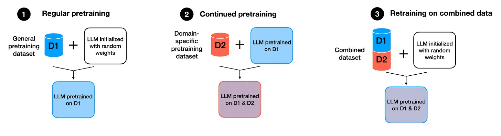
- DAPT (Domain-Adaptive Pre-Training, Gururangan 2020): CPT on a domain corpus (biomed, legal, code).
- TAPT (Task-Adaptive): CPT on the unlabeled text of specific task
Effectiness of CPT
Ibrahim et al. 2024, Simple and Scalable Strategies to Continually Pre-train LLMs
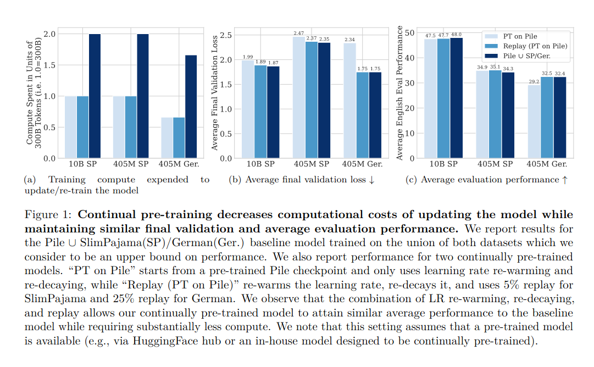
How to make CPT not-forget
The modern recipe (Ibrahim et al. 2024, Simple and Scalable Strategies to Continually Pre-train LLMs):
| Technique | What | Why |
|---|---|---|
| Re-warm + re-decay LR | warm up to a modest peak (well below original pre-train LR), then cosine-decay | tiny LR => adaptation is slow |
| Replay | mix 1–5% of general/original-distribution data back in | avoids catastrophic forgetting |
| Lower LR, fewer epochs | smaller steps, often <1 epoch on huge corpora | over-training = over-forgetting |
Measuring Knowledge Shift
- Measure perplexity on an in-domain and general corpus
- do CPT
- Measure perplexity again on both corpora
domain_text = open("domain_corpus_sample.txt").read() # in-domain
general_text = open("general_sample.txt").read() # a held-out general slice
print("BEFORE in-domain ppl:", perplexity(domain_text))
print("BEFORE general ppl:", perplexity(general_text))
# ... run a short CPT phase (TRL SFTTrainer with no chat template = raw LM, or a manual loop) ...
print("AFTER in-domain ppl:", ...) # should DROP
print("AFTER general ppl:", ...) # watch it RISE = the taxCPT Lab
Successful CPT
- In-domain perplexity down on held-out domain text.
- General perplexity stable enough on a replay/general slice.
- Task metric up on the actual downstream eval: QA, extraction, code completion, classification, or support resolution.
- RAG comparison included if facts are exact or changing.
CPT checklist
| Question | If yes | If no |
|---|---|---|
| Is the domain corpus large enough and repeatedly expresses the facts/jargon? | CPT may create useful domain priors. | Use RAG, SFT, or more data collection. |
| Are the facts stable over the model’s intended lifetime? | Weights can carry the knowledge. | Keep facts outside the model. |
| Does the base model lack domain fluency? | CPT addresses it. | RAG or tool use is cheaper. |
| Can afford full-training memory, replay data, and general-regression evals? | do CPT | no CPT. |
| Do downstream task metrics improve, not only perplexity? | The knowledge became usable. | The model compressed text without solving the product problem. |
Extending the Base Model : New tokens, Longer Context
When adapting to a new language or domain :
- The text tokenizes badly (citations, SKUs, code, non-Latin languages etc)
- documents are longer than the base model’s context window
When domain text tokenizes badly : Vocab Extension
Measure Tokenizer Fertility (English web text ≈ 1.3 tokens/word on a modern tokenizer; legal/biomed/code/non-Latin often 1.6 - 2.5+)
Extending the Base Model : New tokens, Longer Context
example : Chinese-LLaMA
- Mine new tokens - train a BPE tokenizer on the domain corpus, take the top-K merges/tokens that the base tokenizer lacks
- Resize
tokenizer.add_tokens(...) + model.resize_token_embeddings(len(tok)).
- Initialize - set each new token’s embedding to the mean of its old subtoken embeddings.
- Re-warm during CPT - train embeddings (and the tied
lm_head) at full LR from step 0
Extending the Base Model : New tokens, Longer Context
new_tokens = mine_domain_tokens(domain_corpus, top_k=2000) # BPE on corpus, diff vs base vocab
old_tok = AutoTokenizer.from_pretrained(name) # keep a copy for subtoken lookup
n_added = tok.add_tokens(new_tokens)
model.resize_token_embeddings(len(tok))
emb = model.get_input_embeddings().weight.data
for t in new_tokens: # init = mean of old subtoken embeddings
sub_ids = old_tok(t, add_special_tokens=False).input_ids
emb[tok.convert_tokens_to_ids(t)] = emb[sub_ids].mean(0)Long Context Extension
-
If documents are longer than the base model’s context window, you can extend the position embeddings during CPT.
-
RoPE extension : rescale rotary frequencies so new positions land in-distribution
- Position Interpolation (compress all positions; Chen 2023)
- NTK-aware scaling (rescale frequencies non-uniformly, sparing high-frequency/local information)
- YaRN (the refined combination; Peng 2023)
-
Run a short CPT phase on long sequences
-
Train with long documents to teach model long range dependencies
Data Curation
Role of Data
- The model is a function of its data. The choice of data is the most important decision
Data quality, not the algorithm decides the outcome Garbage in -> confident garbage out
Considerations
- Source, Scale, Freshness, Rights, Secrets/PII, Noise, data distribution, contamination with eval set, Mixture with general data
- Deduplication - Exact and Near-dup
- Decontamination - n-gram/substring overlap with eval set
- PII Scrubbing
- Filtering by source, quality, length, etc
Data Mixture and Curriculum Learning
Ref : Tülu 3 / OLMo
- Train on a mixture of domain and general data, not just the domain corpus
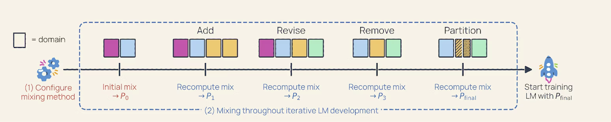
- Curriculum : easy/general first, hard/specific later; the model builds priors before specializing.
- Annealing / midtraining (Llama-3, OLMo-2, MiniCPM): In the final phase, decay the LR while upweighting your highest-quality data.
Catastrophic Forgetting
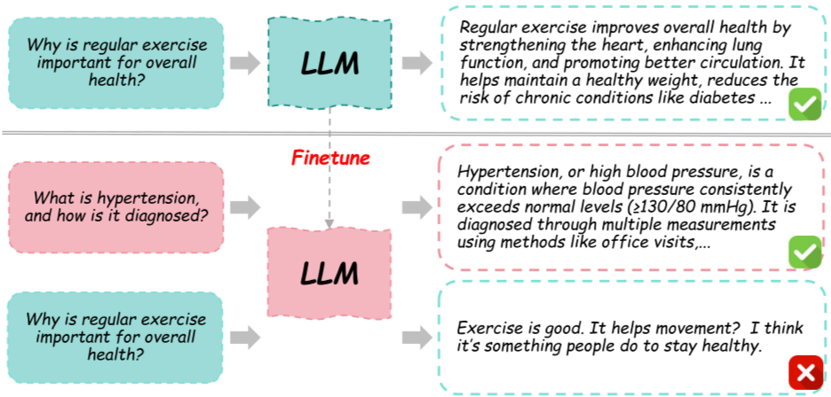
Catastrophic Forgetting
- Gradient descent on narrow data will improve your task but degrade general ability (forgetting).
- The more you train, the better your task performance but the worse your general ability.
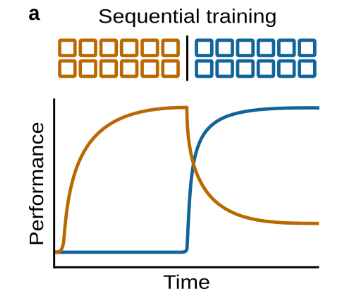
Mitigations
- PEFT/LoRA - less number of weights updated -> less forgetting
- Lower learning rate, fewer epochs - avoid overtraining on the narrow data
- Replay / data mixing - keep some general data in the mix
- Eval on prior capabilities, not just the new task
Eval Before Train
Measure the base model on eval set before fine-tuning. Always. No exceptions.
-
There might not be a problem. many a times the base/instruct model already good enough on the task
-
Need a regression baseline. How much we are willing to lose on general ability or existing workflows to gain on the new task?
-
A number you can’t beat is the only honest definition of success. “It seems better” is not a result.
Eval set construction
- Task lift: the tuned model beats the base/instruct/RAG baseline on the target task.
- Regression check: the tuned model does not lose unacceptable ground on general ability
- Cost check: the model meets the target serving budget: latency, memory, throughput
Case Study and Analysis
-
Customer support: A support chatbot answers correctly but sounds off-brand and forgets to ask for order ID. Do you fine-tune, prompt, or change retrieval? What data would prove your choice?
-
Healthcare summarization: A model writes good discharge summaries but occasionally invents medication details. Which part is behavior and which part is knowledge? What should never be put only in weights?
-
Finance analyst assistant: The model must answer using this morning’s market data. Why is fine-tuning a bad primary solution, and where might fine-tuning still help?
-
Internal code assistant: The model misunderstands company-specific APIs. What would make you choose RAG, CPT, SFT, or a combination?
-
Low-resource language: The model speaks a language poorly. What evidence would tell you whether you need CPT, SFT, synthetic data, or a new tokenizer/model?
-
On-prem deployment: A company wants a local 3B model to replace a cloud frontier model for privacy and cost. Is the fine-tune optimizing quality, latency, privacy, or all three?
-
Tool calling: An agent chooses the right tool but emits malformed arguments. Is this a chat-template problem, an SFT problem, an eval problem, or an RL environment problem?
Training-Memory Math
Full fine-tuning : Four components of training memory
For each parameter, full fine-tuning with Adam stores:
- the weight itself
- its gradient
- Adam’s 1st moment (m) ─┐ optimizer
- Adam’s 2nd moment (v) ─┘ state
- activations (depend on batch × sequence length, not param count)```
Training-Memory Math
Mixed-precision (BF16) full fine-tuning
| Item | Bytes / param | Why |
|---|---|---|
| BF16 weights | 2 | the model you compute with |
| BF16 gradients | 2 | one per weight |
| FP32 master weights | 4 | optimizer keeps a high-precision copy |
| Adam m (FP32) | 4 | first moment |
| Adam v (FP32) | 4 | second moment |
| Total | ~16 bytes/param | before activations |
Example : 7B model
- 7e9 params × 16 bytes ≈ 112 GB just for weights + grads + optimizer state.
- Plus activations (with a real batch/seqlen, easily tens of GB more).
- Full FT of a 7B model does not fit on a single 80GB GPU without sharding/offload.
Some tricks to reduce training memory
- PEFT/LoRA - only update a small fraction of parameters (e.g. 0.1%); the rest are frozen with no grads or optimizer state.
- Gradient checkpointing - recompute activations in the backward pass instead of storing them. Trades compute for memory; ~30% slower, big activation savings.
- Gradient accumulation - simulate a large batch with a small one by summing grads over micro-batches.
- FP8, FP4 training - use lower-precision formats for weights and/or optimizer state
- Offload (ZeRO/FSDP CPU offload) — push optimizer state to CPU/NVMe. slow.
Cost in Compute
The estimate:
FLOPs ≈ 6 × params × tokens (2ND forward + 4ND backward)
GPU-hours = FLOPs / (peak FLOPs/s × MFU) / 3600 (MFU: 30–45% realistic)
dollars = GPU-hours × $/GPU-hour“MFU : model FLOPs utilization - 40% is a good dense-model number, less with short sequences or small batches
Examples:
def training_cost(n_params, n_tokens, peak_flops=989e12, mfu=0.40, usd_per_gpu_hour=3.0):
flops = 6 * n_params * n_tokens # 2ND fwd + 4ND bwd
gpu_hours = flops / (peak_flops * mfu) / 3600 # H100 bf16 peak ≈ 989 TFLOP/s
return round(gpu_hours, 1), round(gpu_hours * usd_per_gpu_hour)
print(training_cost(3e9, 1e9)) # CPT 3B on 1B tokens → (~13 GPU·h, ~$38)
print(training_cost(8e9, 100e9)) # CPT 8B on 100B tokens → (~3,400 GPU·h, ~$10k)
print(training_cost(3e9, 5e6)) # SFT 3B on 10k examples → (~0.06 GPU·h, ~$0.20)Supervised Fine-tuning (SFT)
Supervised Fine-tuning (SFT)
- SFT adds behavior to the text completion base model.
- It can teach new formats, tasks, and styles, but it can’t reliably add new facts.
- Algorithm is trivial : data is the moat
| Rung | Method | Signal | Changes |
|---|---|---|---|
| 0 | prompt / RAG / tools | context | nothing in weights |
| 1 | CPT | raw corpus | knowledge |
| 2 | SFT / instruction tuning | demonstrations (input→output) | behavior, format |
| 3 | preference (DPO/RLHF) | preferences | taste, style, safety |
| 4 | RLVR | a checker | capability via search |
What SFT actually does
- Answer instead of completion : respond to the turn, don’t extend it.
- A grammar : the chat template (roles, turn boundaries)
- Stop : emit the end-of-turn token
SFT Scoping
| Target behavior | Demonstration source |
|---|---|
| Always emit valid support-ticket JSON | 5k corrected tickets |
| Write legal answers in house style | 500 approved examples + RAG facts |
| Follow tool-call argument schema | tool-call transcripts |
| Produce concise executive summaries | human-edited summaries |
Chat Templates
- A base model sees one thing: a flat stream of tokens. It has no concept of ‘user’ vs ‘assistant’, or turns, or instructions vs responses.
- The chat template defines the roles, turn structure, and loss mask for SFT.
- Chat template is a grammar with special tokens
- Examples
ChatML
<|im_start|>/<|im_end|>are single special tokens added to the vocabulary, not the literal characters- Qwen, SmolLM use ChatML; Llama-2 used
[INST]…[/INST]; Alpaca used### Instruction:/### Response:. Different models, different grammar. - Examples HF chat template playground
- The grammar lives in the tokenizer, as a Jinja template in
tokenizer_config.json
Example
from transformers import AutoTokenizer
tok = AutoTokenizer.from_pretrained("Qwen/Qwen2.5-3B-Instruct")
messages = [
{"role": "system", "content": "You are a helpful assistant."},
{"role": "user", "content": "What is 2+2?"},
]
print(tok.apply_chat_template(messages, tokenize=False, add_generation_prompt=True))-
add_generation_prompt=True: appends the assistant header (<\|im_start\|>assistant\n) and stops, so the model generates as the assistant -
continue_final_message=True: does not open a new turn — continues the last (assistant) message
Template Mismatch Bugs
- Train and serve with the identical template. vLLM/HF/SGLang apply the tokenizer’s template by default
- Train on the end-of-turn token (
<|im_end|>/ EOS) or the model never learns to stop generating - Don’t mix SFT data with a different template (e.g. ShareGPT exports with
### Human:)
Loss Masking
-
The loss mask defines which tokens the model is trying to predict during training.
-
For SFT, the loss should be on the assistant’s response only, not the prompt or system instructions.
-
Completion only loss - standard for instruction tuning
SFT Objective
For an example with prompt x and response \(y =
(y_1,\dots,y_{|y|})\), SFT minimizes the token-level cross-entropy over the completion
only:
\[ \mathcal{L}_{\text{SFT}}(\theta) = -\sum_{(x,y)\in\mathcal{D}} \sum_{t=1}^{|y|} \log p_\theta\big(y_t \mid x, y_{<t}\big) \]
SFT Recipe
from transformers import AutoTokenizer
tok = AutoTokenizer.from_pretrained("....")
messages = [
{"role": "user", "content": "What is 2+2?"},
{"role": "assistant", "content": "4"},
]
# prompt = everything up to and including the assistant header
prompt_ids = tok.apply_chat_template(messages[:-1], add_generation_prompt=True)
# full = prompt + the assistant's answer + the end-of-turn token
full_ids = tok.apply_chat_template(messages)
labels = [-100] * len(prompt_ids) + full_ids[len(prompt_ids):] # mask the prompt prefix
print(f"{'TOKEN':<18}{'ID':>8} LOSS?")
for tid, lab in zip(full_ids, labels):
print(f"{tok.decode([tid])!r:<18}{tid:>8} {'LOSS' if lab != -100 else '----'}")SFT Checklist and Tests
- Train for a few steps (<50) on a small batch; check loss goes down and model generates the right format
- Does it answer as the assistant rather than continue the user?
- Does it stop at the right boundary?
- Does it preserve the requested output format?
- Does the loss move and avoid NaNs?
- Does the number of loss tokens per batch stay nonzero after packing?
Hyperparameters
| Knob | Full-FT | LoRA | Note |
|---|---|---|---|
| Learning rate | 1e-5 - 2e-5 |
1e-4 - 2e-4 |
LoRA wants ~10× higher |
| Epochs | 1 - 3 | 1 - 3 | small/clean data tolerates more (LIMA used ~15 on 1k) |
| Warmup | 3 - 10% | 3 - 10% | linear warmup -> cosine/linear decay |
| Effective batch | 32 - 128 seqs | same | reach it with gradient accumulation |
| Max length | 2k - 8k | same | fits your data’s length distribution |
Start at 1 epoch, look at the eval, then decide
Reading Loss Curves
Stable
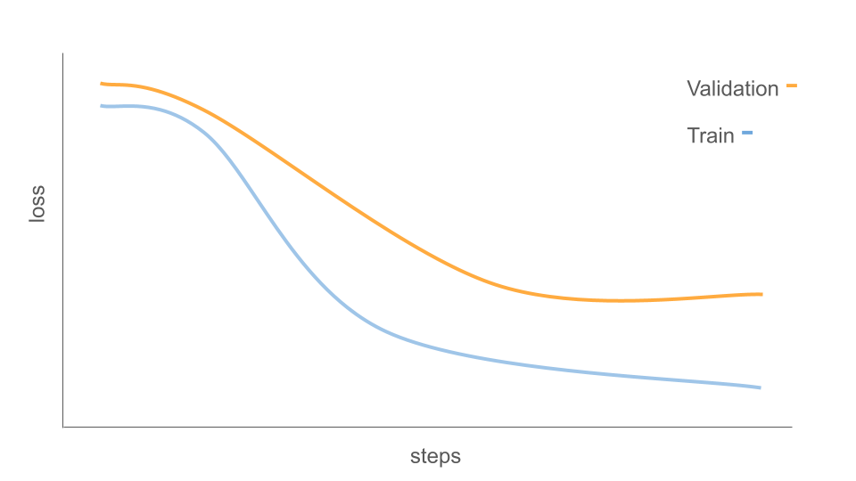
Overfit 
- (a) smooth decline -> plateau: good.
- (b) spikes / NaN: LR too high (or bad data, or fp16 overflow etc).
- (c) flat: LR too low, or your mask zeroed everything
- (d) train keeps dropping while held-out rises, sharp drops at each epoch boundary: overfitting. Fewer epochs / lower LR / more data.
Log the metrics in Trackio or WandB
Synthetic Data for SFT
- SFT, Preference, and RLHF all require a dataset of input-output pairs or preferences.
- If no data, create it synthetically with a stronger model.
- Take a strong teacher model and have it write the training set . This is how Alpaca, WizardLM, and other open-source instruction-tuning datasets were constructed.
Three generation strategies
| Method | Idea | Knob that matters |
|---|---|---|
| Self-Instruct (Wang 2022) | seed with ~175 human tasks; teacher bootstraps new instructions + instances from them; filter for diversity | the seed set’s breadth; dedup against existing instructions |
| Evol-Instruct / WizardLM (Xu 2023) | take an instruction and evolve it: deepen, add constraints, concretize, increase reasoning steps (in-depth) or spawn a new topic (in-breadth) | controlled complexity - the lift over flat Self-Instruct |
| Persona-based (Persona Hub, Ge 2024) | condition generation on a persona (“a tax auditor”, “a pediatric nurse”) to force diversity | the persona set is the diversity dial |
DEMO : Generate-then-judge, end to end
# (conceptual loop : swap `teacher()` / `judge()` for your local instruct model or an API)
EVOL = "Rewrite the instruction to require one more reasoning step, keeping it answerable:\n{inst}"
def expand(seed_instructions, teacher):
pool = list(seed_instructions)
for inst in seed_instructions:
pool.append(teacher(EVOL.format(inst=inst))) # Evol-Instruct: in-depth
return pool
RUBRIC = """Rate this (instruction, answer) pair 1-5 on correctness, helpfulness, clarity.
Reply with ONLY an integer.
INSTRUCTION: {inst}
ANSWER: {ans}"""
def build_dataset(seeds, teacher, judge, keep_threshold=4):
rows = []
for inst in expand(seeds, teacher):
ans = teacher(inst) # generate the answer
score = int(judge(RUBRIC.format(inst=inst, ans=ans)))# judge-as-filter
if score >= keep_threshold:
rows.append({"instruction": inst, "answer": ans, "score": score})
return rowsData Quality
- Carefully curated 1K examples can beat a noisy 10K or 100K examples (LIMA 2023)
Good SFT example:
- Correct (a wrong demonstration teaches a wrong behavior).
- Consistent format (the answer shape we actually want).
- Diverse (tasks, lengths, phrasings).
- Clean of leakage (no foreign template, no system-prompt leakage).
Multi-dataset SFT
many formats => one schema:
Alpaca {instruction, input, output} ─┐
ShareGPT {conversations:[{from,value}]}├─► {"messages":[{"role","content"}, …]} ──► apply_chat_template
OASST (message tree) ─┘ (the single canonical form)- Role mapping - ShareGPT’s
human/gpt→user/assistant; drop or mapsystem. - Template leakage - strip any
### Response:/<|im_end|>already baked into a field - Dedup + decontaminate the mixture
SFT run desirability
- Target lift: improves the held-out task or product eval
- Format reliability: passes schema/template/stop-token checks
- Regression check: does not lose unacceptable ground on general chat, safety, tool syntax, or domain factuality.
- Data/mask reproducibility: dataset version, tokenizer revision, chat template, rendered sample, and mask audit are saved.
- Serving equivalence: local generation and serving-stack generation use the same prompt tokenization and stop tokens.
Wrap-up
-
Chat template : train and serve with the identical grammar
-
Loss mask : loss on the completion + end-of-turn only
-
Data : quality > quantity; standardize, dedup, decontaminate
-
Hyperparams : start at 1 epoch, low LR, read the held-out curve
SFT is the easiest algorithm in finetuning and but can break sublty on the data or the mask or the template”